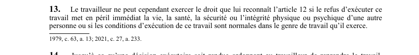

art-13-LSST : limites du droit de refus
Un article du wiki ⚖️ Recueil législatif
Texte de l’article (transcription)
Le travailleur ne peut exercer le droit de refus si ce refus met en péril immédiat la vie, la santé. Cette interdiction vise le travailleur.
- Ou si les conditions d'exécution du travail sont normales dans le genre de travail.
- Conditions normales du genre de travail exercé.
🌐 LegisQuébec · 📄 PDF officiel (page 9)
Texte officiel : capture du PDF

Toucher l'image pour l'agrandir🔗 Ouvrir a cette page : LSST.pdf : page 9 · texte a jour au 26 mars 2024
Voir aussi
- art. 11 : droits étendus aux personnes assimilées · les personnes visées dans les paragraphes 1° et 2° de la définition du mot «travailleur» à l'article 1 jouissent des droits accordés au travailleur par les articles 9, 10 et 32 à 48.
- art. 12 : droit refus travail dangereux · droit : un travailleur a le droit de refuser d'exécuter un travail s'il a des motifs raisonnables de croire que l'exécution l'expose à un danger pour sa santé, sa sécurité ou son intégrité physique ou psychique, ou peut exposer une autre personne à un semblable danger.
- art. 14 : maintien travailleur en refus · faculté : jusqu'à une décision exécutoire ordonnant la reprise du travail, l'employeur ne peut faire exécuter le travail par un autre travailleur ou par une personne hors de l'établissement ; le travailleur qui exerce son droit de refus est réputé être au travail.
- art. 15 : avis immédiat refus travail · obligation : lorsqu'un travailleur refuse d'exécuter un travail, il doit aussitôt aviser son supérieur immédiat, l'employeur ou un représentant ; si aucun d'eux n'est présent, le travailleur doit utiliser les moyens raisonnables pour en aviser un sans délai.
- ↑ Loi : LSST
Pages qui pointent ici (8)
- art-11-LSST : droits étendus aux personnes assimilées Recueil législatif
- art-12-LSST : droit refus travail dangereux Recueil législatif
- art-14-LSST : maintien travailleur en refus Recueil législatif
- art-15-LSST : avis immédiat refus travail Recueil législatif
- Droit de refus Recueil législatif
- LSST : Chapitre II : Droits et obligations Recueil législatif
- LSST : Chapitre III : Droit de refus et retrait préventif Recueil législatif
- LSST, droits et obligations Droit du travail